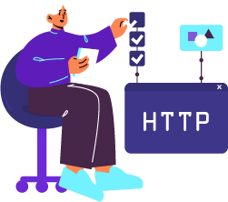
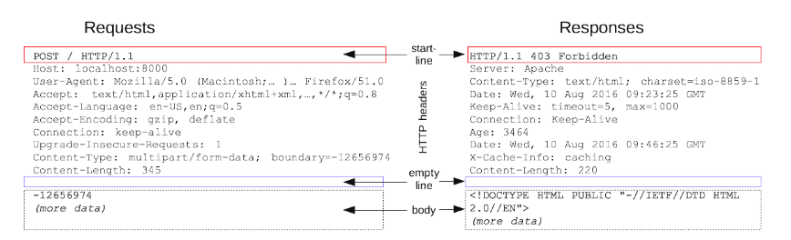
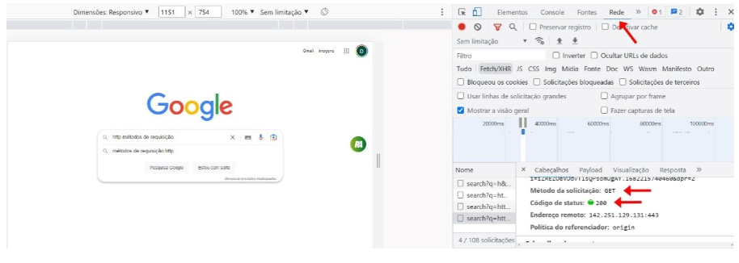
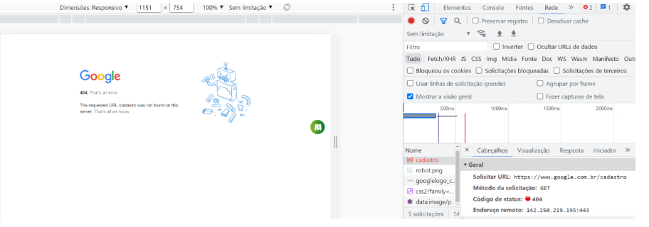
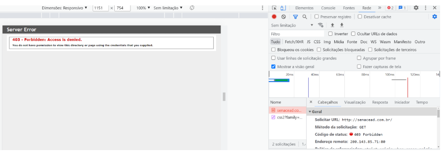

Protocolo HTTP: conceitos, requisições e respost as, operações (GET, POST, PUT, DELETE), informações
de
cabeçalhos, códigos de status da resposta; representações de dados: texto plano,
JavaScript object
notation (JSON), extensible markup language (XML)
Introdução

Vive-se em uma era em que a internet é parte essencial do dia a dia, conectando pessoas,
sistemas e
informações de maneira quase instantânea. Para que isso aconteça, tecnologias como o
protocolo HTTP
(hypertext transfer protocol) e formatos de dados como JSON (JavaScript object
notation) e XML
(extensible markup language) desempenham papéis fundamentais. O HTTP é o responsável
por
possibilitar a
comunicação entre computadores na web, enquanto JSON e XML organizam e facilitam a
troca de
informações
entre sistemas de forma clara e eficiente.
Este material foi pensado para apresentar esses dois universos, mostrando como eles se
complementam
na
construção de sistemas modernos. Ao longo deste conteúdo, você encontrará conceitos básicos,
exemplos
práticos e explicações acessíveis que ajudarão a entender melhor como essas ferramentas
transformam
ideias em aplicações funcionais.
Protocolo HTTP
Veja o vídeo a seguir:
Um protocolo responsável pela comunicação entre duas máquinas na web:
esse é o protocolo
HTTP.
Vamos entender como funciona este processo:
A comunicação, ocorre da seguinte forma: o cliente faz uma requisição para o
servidor,
request, com
os dados dessa requisição.
Depois, o servidor, apresenta uma resposta ao cliente, response, de
acordo com o
solicitado.
Este ciclo de requisição e resposta é o que possibilita a navegação e o
funcionamento dos
sites.
Por exemplo, quando você digita um endereço no navegador, como
"www.exemplo.com", o navegador
faz
uma requisição HTTP ao servidor, pedindo os dados necessários para exibir a
página. O servidor
então
responde com os dados solicitados, usando o protocolo HTTP para a
comunicação.
É esse protocolo que permite que você acesse páginas da internet, imagens,
vídeos e outros
conteúdos.
Veja que, o HTTP é um protocolo sem estado, o que significa que cada
requisição é tratada
independentemente, sem lembrar de requisições anteriores. Ele também é a
base para a navegação
na
web, funcionando como a "linguagem" usada para a troca de informações
na internet.
Estrutura de requisição e resposta no HTTP
Request e response
Clique ou toque para visualizar o conteúdo.
Request
Em tradução direta, a request significa requisição, ou seja, é um
pedido
que o
cliente realiza ao servidor. Nesse pedido, encontram-se todos os dados
necessários
para atender à solicitação dREo cliente, podendo ser desde dados estáticos
(já
presentes na página) até dados de formulários (digitados pelo próprio
cliente).
O request acontece a cada interação com uma página. Por exemplo: ao
clicar em uma
categoria de filmes de uma plataforma streaming, você está fazendo
uma
requisição ao
servidor, que devolve os dados da página solicitada (response). Isso
também acontece
ao cadastrar um novo determinado recurso. Nessa situação, é enviada a
requisição
juntamente com os dados do formulário. Vale destacar que toda informação em
HTTP
é
transportada como texto.
O protocolo ainda define verbos ou métodos, que são modos de interpretar
essas
requisições. Os mais comuns são GET e POST.
GET – Neste verbo, os parâmetros são enviados por meio do
cabeçalho
da
requisição, ficando visíveis os dados transmitidos pela URL (uniform
resource
locator).
POST – Neste verbo, os dados são enviados no corpo da requisição.
Assim, esses
parâmetros não estão visíveis para o usuário explicitamente no primeiro
momento,
porém podem ser facilmente acessados utilizando recursos básicos.
Além desses verbos, ainda existem outros, como PUT, DELETE e
PATCH, normalmente
utilizados com serviços web.
Response
Como visto anteriormente, request é uma requisição feita ao servidor
com
dados que o
cliente deseja receber do servidor. A partir do processamento em servidor, é
enviada
a resposta – ou response – contendo os dados solicitados. Por
exemplo, ao
solicitar
uma página como “www.ead.senac.br”, um request é enviado ao servidor,
que
fará
processamentos, e um response é enviado de volta pelo servidor com os
dados da
página – o próprio código HTML (hypertext markup language) dela.
Com os dados de resposta (o corpo da resposta), um código de status é
enviado.
Trata-se de um número entre 100 e 599, em que cada centena tem uma categoria
para os
status.
É importante saber que existe uma estrutura-padrão para requisições e
respostas
no
HTTP. Veja a divisão dessa estrutura:
Clique ou toque para visualizar o conteúdo.
É uma linha inicial que mostra o tipo de requisição pedido,
além
de poder mostrar também seus status de sucesso ou
falha.
É um conjunto não obrigatório de cabeçalhos HTTP,
demonstrando as
peculiaridades da mensagem ou demonstrando os itens contidos
no
seu corpo.
É uma linha em branco que destaca o fim do cabeçalho e o
início
do corpo da mensagem.
É o corpo da mensagem, na última parte, que, no caso, não
aparece
em todas as mensagens.
Veja esses elementos na imagem:

Exemplos de requisição e
resposta
no HTTP
Fonte: Stack Overflow (2018)
A imagem apresenta os elementos da estrutura HTTP citados na lista
anterior,
divididos em duas colunas (Requests e Responses) com destaque para a
linha
inicial: POST / HTTP/1.1 (start line do request) e HTTP/1.1 403
Forbidden
(start
line do response).
Códigos de status HTTP
A comunicação entre cliente e servidor ocorre por meio do protocolo HTTP, e sempre que o
navegador
(cliente) faz uma solicitação ao servidor, ele recebe um código composto de três números,
informando
se
a solicitação foi bem-sucedida, se houve algum erro ou se é necessária uma autenticação prévia
para
envio da resposta.
Entre os códigos de status, existem cinco categorias, e é necessário saber que o primeiro
dígito desse
código define a categoria a que ele pertence. Por exemplo, o código 403, que começa pelo número
4,
indica que é um erro do lado do cliente (usuário); já um erro de número 503, que começa pelo
número
5, é
um erro do lado do servidor. Desse modo, é importante conhecer o que cada número de 1 a 5
significa
dentro do status. Com essas informações, é possível conhecer as principais categorias de
status.
Clique ou toque para visualizar o conteúdo.
Inicia com o valor 1 e tem valores como 101, 102, 103 etc. Essa categoria é
utilizada
pelo servidor para informar ao cliente que uma solicitação/requisição está em
andamento.
Inicia com o valor 2 e tem valores como 201, 202, 203 etc. Essa categoria é
utilizada
pelo servidor para informar ao cliente que uma solicitação/requisição está
aceita
pelo servidor. É esse o tipo de requisição esperada ao fazer um pedido ao
servidor,
pois indica que está tudo certo e o processo continuará seu andamento.
Inicia com o valor 3 e tem valores como 301, 302, 303 etc. Essa categoria indica
que
é preciso um redirecionamento, ou seja, novos passos são necessários para que a
requisição seja aceita.
Inicia com o valor 4 e tem valores como 401, 402, 403 etc. Essa categoria é
utilizada
pelo servidor para informar erros do lado do cliente, ou seja, a requisição foi
recebida, mas não pôde ser continuada por uma falha que aconteceu do lado do
cliente. Obs.: os códigos das linhas 4XX e 5XX são os códigos de erro.
Inicia com o valor 5 e tem valores como 501, 502, 503 etc. Essa categoria é
utilizada
pelo servidor para informar ao cliente um erro que ocorreu do lado do servidor.
Obs.: os códigos das linhas 4XX e 5XX são os códigos de erro.
Códigos de erro HTTP
Além das categorias dos principais status do HTTP, existem alguns erros mais constantes que
precisam
ser
conhecidos. Veja os principais:
Clique ou toque para visualizar o conteúdo.
Este código de erro não significa um erro em si, mas é necessário conhecê-lo,
pois é
o código esperado como solução para qualquer erro anterior, ou seja, o código
200
indica que a solicitação foi bem-sucedida/aceita.
Este é um erro interno do servidor e muito temido pelos usuários, pois indica que
o
servidor está passando por alguma instabilidade e não está conseguindo dar
andamento
à requisição do cliente.
Este é o conhecido acesso proibido. É simplesmente uma negação do servidor à
requisição do cliente, ou seja, demonstra que o cliente não tem permissão de
acesso
ao conteúdo requisitado. Esse erro é comum de ser visto durante navegações pela
web,
pois ele é uma forma de proteger os dados de acessos indevidos, geralmente
solucionado por meio de autenticação. Deve-se deixar claro que a URL foi
encontrada,
diferentemente do erro 404, em que não é encontrada a URL requisitada.
Esse é um dos códigos mais conhecidos do HTTP. Ele indica uma falha de
solicitação do
lado do servidor, normalmente um processo de manutenção, sobrecarga de dados ou
erro
de configuração interna do servidor.
Clássico erro indicando que a página requisitada não foi encontrada, normalmente
por
erro de digitação da URL ou porque a página está fora do ar.
Métodos de tratamento de requisições
As requisições sempre contam com um método ou verbo que indica como os dados enviados ao
servidor
devem
ser tratados. Por padrão, uma requisição utiliza o método GET. A seguir, veja o conceito
de
cada método
separadamente.
Clique ou toque para visualizar o conteúdo.
POST
Este método é geralmente utilizado para enviar informações ao servidor, muitas
vezes
dentro de formulários, com as informações anexadas no corpo da mensagem.
GET
Este método é geralmente utilizado para buscar informações do servidor, como o
acesso
a uma página específica, por exemplo.
PUT
Este método é geralmente utilizado para atualizar todos os dados de um
determinado
produto, tendo como base normalmente o ID desse produto ou qualquer outra chave
primária.
PATCH
Este método é geralmente utilizado para atualizar parte dos dados de um
determinado
produto, tendo como base normalmente o ID desse produto ou qualquer outra chave
primária.
DELETE
Este método é geralmente utilizado para deletar informações do servidor.
Os métodos POST e GET são padrão para aplicações web, enquanto PUT,
PATCH e DELETE são mais
especificamente utilizados em web services. Do lado do cliente, o request envia o
verbo necessário; do
lado do servidor, o back-end processa de acordo com esse verbo. Por exemplo, se o
servidor
receber
requisição POST, a ideia é que também trate os dados recebidos e processe potencialmente,
gravando-os em
banco de dados, por exemplo. Já se receber GET, o processamento será no sentido de
retornar
uma página
do sistema ou alguma informação processada pelo servidor.
Dados retornados em uma resposta
Dentro do próprio navegador Google Chrome, há uma ferramenta para visualizar as respostas do
servidor
perante qualquer requisição do cliente. Quando estiver navegando na internet, use o atalho
F12, que dá
acesso a DevTools ou ferramenta do desenvolvedor.
a) Exemplo de retorno de requisição 200 de uma busca do Google:

Ferramenta de desenvolvedor – status 200
Fonte: Senac EAD (2025)
A imagem apresenta um exemplo de retorno da requisição com status 200, apresentado no
console do
navegador, na aba rede, com destaque para método de solicitação GET e código de status 200.
Note que, em um exemplo real de uma pesquisa, quando a requisição é aceita pelo servidor, ele
retorna o
status 200, já estudado, que indica que a requisição foi aceita.
A ferramenta do desenvolvedor pode estar em inglês, então é utilizado o item Network para
acessar as
requisições.
A seguir, serão analisados alguns itens importantes.
b) Exemplo de retorno de requisição 404 de uma busca do Google:

Ferramenta de desenvolvedor – status 404
Fonte: Senac EAD (2025)
A imagem apresenta um exemplo de retorno da requisição com status 200, apresentado no
console do
navegador, na aba rede, com destaque para método de solicitação GET e código de status 404.
Ao tentar acessar o endereço “http://www.google.com.br/cadastro”, que é um endereço inválido, é
possível
entender com exatidão o uso do retorno 404 para páginas inexistentes.

Ferramenta de desenvolvedor – status 403
Fonte: Senac EAD (2025)
A imagem apresenta um exemplo de retorno da requisição com status 200, apresentado no
console do
navegador, na aba rede, com destaque para método de solicitação GET e código de status 403.
Ao tentar acessar indevidamente o endereço “http://www.senacead.com.br”, que é um endereço que
necessita
de autorização, é possível entender o uso do retorno 403 para páginas que necessitam de
login
prévio.
REST, JSON e XML
Clique ou toque para visualizar o conteúdo.
REST
O representational state transfer (REST) é um estilo arquitetural
muito
usado no
desenvolvimento de aplicações distribuídas, especialmente em sistemas
web. O REST é
baseado em um conjunto de restrições que ajudam a criar sistemas escaláveis,
simples
e interoperáveis. O REST não é exatamente um padrão ou protocolo rígido, mas
um
conjunto de princípios que orientam como projetar sistemas que utilizam o
protocolo
HTTP.
Um dos pilares do REST é o conceito de recurso. Recursos são como entidades
que
representam qualquer tipo de dado ou funcionalidade de um sistema, como um
usuário,
um produto ou um pedido. Cada recurso é identificado de forma única por meio
de
um
URI (uniform resource identifier). Para acessar e manipular esses
recursos, o REST
utiliza métodos-padrão do HTTP, como o GET, para buscar informações,
o
POST, para
criar recursos, o PUT, para atualizá-los, e o DELETE, para
removê-los.
Outro princípio essencial do REST é o de statelessness, ou seja, “sem
estado”. Isso
quer dizer que cada requisição feita pelo cliente ao servidor precisa conter
todas
as informações necessárias para que ela seja processada, sem depender de
informações
enviadas em requisições anteriores. Esse princípio torna o sistema mais
escalável,
já que permite que diferentes servidores processem as requisições de forma
independente, sem precisar compartilhar estados entre si.
O REST também incentiva o uso de uma interface uniforme, garantindo que as
interações entre cliente e servidor sigam padrões consistentes. Isso envolve
nomear
os recursos de maneira clara, usar os métodos HTTP adequados e estruturar as
mensagens de requisição e resposta de forma bem definida. Além disso, o REST
trabalha com representações para transferir o estado dos recursos. Essas
representações podem ser feitas em formatos como JSON, XML ou HTML,
proporcionando
flexibilidade e integração entre diferentes sistemas.
Por fim, o REST é uma abordagem arquitetural que se destaca por sua
simplicidade,
padronização e capacidade de integração. Ele é amplamente adotado no
desenvolvimento
de APIs (application programming interface) de serviços web,
graças à sua habilidade
de estruturar sistemas de forma eficiente e escalável, aproveitando as
funcionalidades já disponíveis no protocolo HTTP. Seguindo os princípios do
REST, os
desenvolvedores conseguem criar sistemas robustos, flexíveis e fáceis de
manter.
Você encontra uma abordagem prática sobre o REST no conteúdo Padrão
representational
state transfer – REST: conceitos, tipos de requisições,
interpretação das operações,
parâmetros, processamento e resposta; ferramentas de linguagem de
programação
back-end para programação de serviços REST.
JSON
O JSON, que significa JavaScript object notation, é como uma
linguagem
universal
para troca de informações no mundo da tecnologia. Ele foi criado para ser
fácil
de
entender e simples de usar, tanto por programadores quanto pelas máquinas
que
processam os dados.
Uma forma de imaginar o JSON é pensar em uma maneira organizada de guardar
informações, como uma lista de compras bem arrumada ou um formulário de
cadastro.
Por exemplo, em vez de ter dados espalhados, o JSON organiza tudo de forma
clara:
você sabe o que cada dado representa e onde ele está.
Por ser leve e versátil, o JSON funciona em quase todas as linguagens de
programação
modernas e é usado em diversos contextos, como aplicativos de celular,
sistemas
web,
APIs (que são como pontes para sistemas conversarem) e até em bancos de
dados. É
uma
solução prática para que sistemas diferentes troquem informações de forma
rápida
e
eficiente.
Você encontra uma abordagem prática sobre o JSON, no conteúdo de
Programação
de
serviços: implementação e instalação.
XML
O XML é uma linguagem usada para representar dados de maneira estruturada e
hierárquica. Ele funciona como uma espécie de “caixa organizadora” na qual
cada
dado
tem sua etiqueta (tag) que descreve o que ele é. Além de ser legível
por
humanos,
essa estrutura foi projetada para ser processada por máquinas, sendo
amplamente
utilizada em integração de sistemas, configuração de aplicativos e
armazenamento
de
informações.
O XML e o HTML têm muito em comum, pois ambos usam uma estrutura baseada em
marcação, ou seja, trabalham com elementos delimitados por tags para
organizar as
informações. A diferença principal está no propósito: o HTML foi criado para
estruturar e exibir conteúdo em páginas web, definindo elementos como
cabeçalhos,
parágrafos, links, imagens e tabelas. Já o XML é mais versátil,
funcionando como uma
“linguagem universal” para armazenar, organizar e compartilhar dados de
forma
estruturada entre sistemas diferentes.
Esse XML organiza os dados para facilitar a integração entre sistemas, como
lojas
virtuais, sendo flexível e legível tanto por humanos quanto por máquinas.
No próximo exemplo, veja uma implementação para configurações, demonstrando
como
um
arquivo XML pode armazenar configurações de um sistema.
Aqui, o XML organiza as preferências do usuário, informações do sistema e
configurações de segurança em uma hierarquia clara.
Encerramento
Entender como funcionam as requisições HTTP e as respostas dos servidores é essencial para criar
sistemas que funcionem de forma fluida e eficiente. Isso permite desenvolver soluções mais
intuitivas,
em que mensagens claras e ações simples ajudam os usuários a compreender o que está acontecendo,
mesmo
quando algo dá errado, evitando frustrações e melhorando a experiência.
Além disso, formatos como JSON e XML são ferramentas indispensáveis no desenvolvimento de
sistemas
modernos. O JSON, por ser leve e fácil de usar, é perfeito para a troca rápida de informações,
especialmente em aplicativos web e APIs. Já o XML, com sua estrutura organizada e
flexível, é uma ótima
opção para armazenar e compartilhar dados em sistemas mais robustos e complexos.
Dominar esses conceitos não é apenas sobre criar sistemas mais seguros e estáveis, mas também
sobre
oferecer uma experiência melhor para quem os utiliza. Combinando HTTP, JSON e XML de forma
estratégica,
é possível desenvolver aplicações que sejam, ao mesmo tempo, eficientes, acessíveis e preparadas
para
atender às demandas da tecnologia atual.